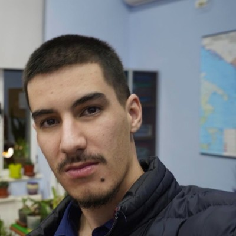
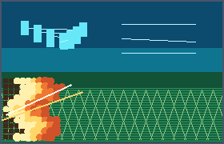
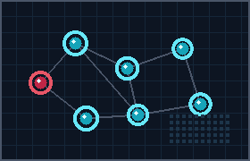

Ene Meco
ECE PhD Student · University of Illinois Chicago
I am an Electrical and Computer Engineering PhD student at the University of Illinois Chicago, specializing in machine learning and signal processing. My research spans deep learning for environmental prediction, multi-agent learning, and weak-signal detection.
In 2026, I joined Northwestern University for IDEAL summer research with Prof. Ermin Wei on mixed-autonomy systems, game theory, and single-agent poisoning attacks in multi-agent learning environments. At UIC, I work with Prof. A. Enis Cetin on wildfire prediction with U-Nets and teach ECE 115 labs.
Previously, I was a software engineer and team lead at Abissnet, where I built an internal AI agent using proprietary company data and a vector database. I also interned at the Paris Observatory | PSL on Python-based FFT signal processing for astrophysical signal detection on Red Pitaya. I earned my BS from Sorbonne Université and completed an exchange year at the University of Chicago.

Education
PhD, Electrical & Computer Engineering, 2026–2030
University of Illinois Chicago (UIC)
Exchange Program, 2024–2025
University of Chicago · Data Science & Machine Learning
BS, Electrical Engineering; Minor in Computer Science, 2022–2025
Sorbonne University, Faculty of Science and Engineering
Research Interests
- Machine Learning & Deep Learning
- Multi-Agent Learning & Game Theory
- Environmental Prediction with Computer Vision
- Signal Processing & FPGA Systems
- AI Systems & Vector Databases
News
| Jun 2026 | Joined IDEAL Summer Research at Northwestern University under Prof. Ermin Wei. |
| Jan 2026 | Began the ECE PhD program at University of Illinois Chicago. |
| Jan 2026 | Started as a Research and Teaching Assistant at UIC, including ECE 115 labs. |
| Dec 2025 | Designed a self-play reinforcement learning agent for Murlan. |
| Jul 2025 | Started full-time work as a Software Engineer and Team Lead at Abissnet. |
| Jun 2024 | Research internship at Paris Observatory | PSL on FFT signal processing with Red Pitaya. |
Selected Publications & Projects
-

-

Single-Agent Poisoning Attacks in Multi-Agent Learning Environments
IDEAL Summer Research · Northwestern University, Jun–Aug 2026
-

AI Agent for Murlan (Self-Play Reinforcement Learning)
Personal Project, Dec 2025 · PPO, policy-value networks, legal-action masking
See all projects on the projects page or LinkedIn.